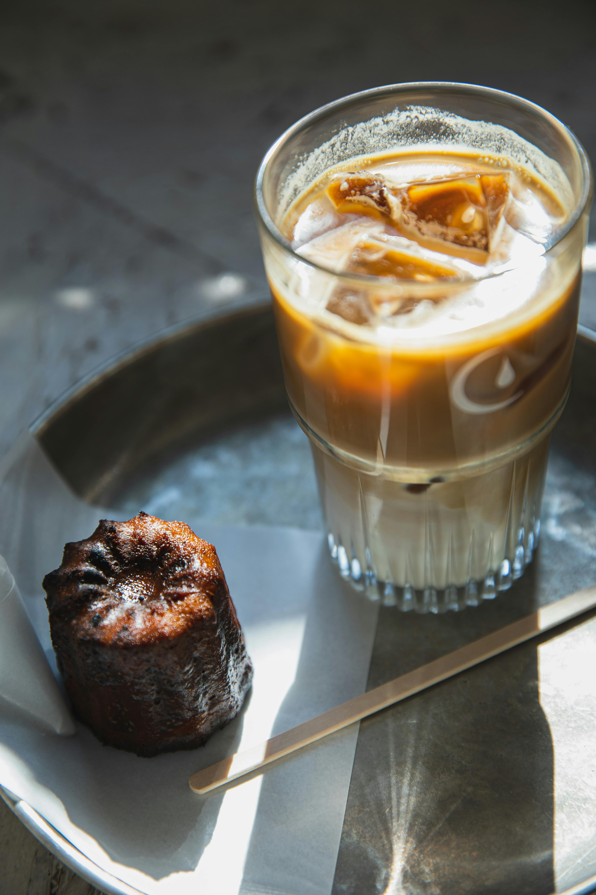
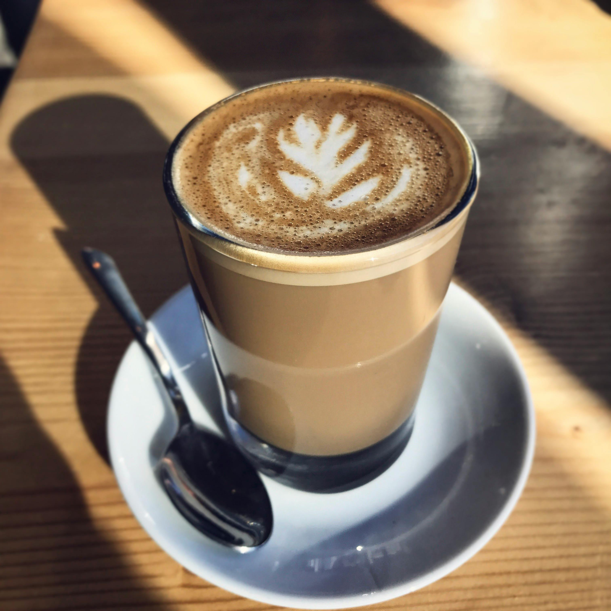

Ingredients:
1 cup brewed coffee (cooled)
1/2 cup milk (chilled)
2 tablespoons sugar (or to taste)
1/2 teaspoon vanilla extract (optional)
Ice cubes
Whipped cream (optional, for topping)
Chocolate shavings or cocoa powder (optional, for garnish)
1. Brew Coffee: Brew 1 cup of coffee and let it cool to room temperature or chill it in the refrigerator. You can use any coffee of your choice, such as drip coffee, espresso, or even a strong cold brew.
2. Prepare the Coffee Mixture:
Blend Ingredients: In a blender, combine the cooled coffee, chilled milk, sugar, and vanilla extract (if using). Blend until well mixed and frothy.
Adjust Sweetness: Taste the mixture and adjust the sweetness by adding more sugar if needed.
3. Serve:
Prepare Glasses: Fill glasses with ice cubes.
Pour Coffee: Pour the blended coffee mixture over the ice-filled glasses.
4. Optional Toppings:
Whipped Cream: Top with a dollop of whipped cream if desired.
Garnish: Sprinkle with chocolate shavings or a dusting of cocoa powder for an extra touch.
5. Enjoy: Serve immediately and enjoy your refreshing cold coffee!
1 Boil Milk: Heat the milk in a large pan over medium heat. Stir occasionally to prevent it from sticking to the bottom.
2 Curdle the Milk: Once the milk comes to a boil, add the lemon juice or vinegar mixed with water gradually while stirring. The milk will start to curdle. If it doesn’t curdle completely, add a bit more lemon juice or vinegar.
3 Drain the Curds: Once the milk has fully curdled, turn off the heat. Pour the mixture through a cheesecloth or a fine sieve to separate the curds from the whey. Rinse the curds under cold water to remove any acidity.
4 Press the Curds: Gather the cheesecloth and squeeze out excess water. Place the curds on a flat surface and press them down with a heavy object for about 30 minutes to remove more moisture.

Iced Coffee: For a simpler iced coffee version, you can skip the blending. Just mix the cooled coffee with chilled milk and sugar, stir well, and pour over ice.
Coffee Frappé: Blend coffee with ice cubes for a thicker, frappé-like texture. You can also add a scoop of vanilla ice cream for extra creaminess.
Feel free to adjust the ingredients to suit your taste preferences, and enjoy your homemade cold coffee!
